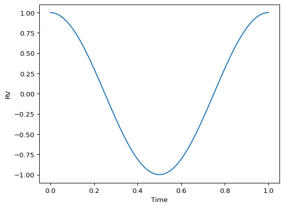

An Interactive Introduction to Orbital Elements¶
(For Confused Exoplanet Observers)¶
Author: Cayla Dedrick¶
[1]:
import numpy as np
import matplotlib.pyplot as plt
[2]:
true_anom = np.linspace(0, 2 * np.pi, 1000)
def rv(f):
P = 1
Tp = 0
e = 0
w = 0
K = 1
rv = K * (np.cos(f + w) + e * np.cos(w))
return rv
def trueanom_to_time(f, P, Tp, e):
cosE = (e + np.cos(f))/(1 + e * np.cos(f))
sinE = (np.sqrt(1 - e**2) * np.sin(f))/(1 + e * np.cos(f))
E = np.arctan2(sinE, cosE)
E[E < 0] += 2 * np.pi
M = E - e * np.sin(E)
return P / (2 * np.pi) * M + Tp
[3]:
t_plot = trueanom_to_time(true_anom, P=1, Tp=0, e=0)
rv_plot = rv(true_anom)
fig, axs = plt.subplots(1, 1)
axs.plot(t_plot, rv_plot)
axs.set_xlabel('Time')
axs.set_ylabel('RV')
[3]:
Text(0, 0.5, 'RV')

[ ]: